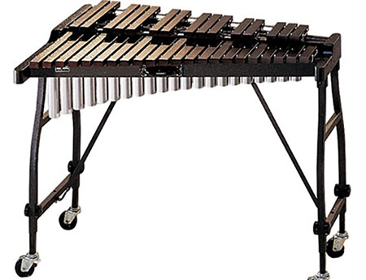

- Description
The xylophone is a musical instrument in the percussion family that consists of wooden bars, that contains pitches on the musical scale, struck by mallets. In orchestral terms, the xylophone is specifically an instrument of somewhat a higher pitch range and drier than a marimba. The YX-135 is made of Padauk wood at an entirely affordable price, with the bars carefully crafted for superb tonal clarity and resonance.
- Specifications
Name: YX-135 Range: 3 1/2 octaves Material: Padauk wood Bar Sizes: Non-graduated 1 3/8in x 3/4in Resonators: Brushed tan finish wth cutaway design, only essential accidental resonators. Pricing: RM380 per month - Pricing Explanation
Pit percussions, and usualy more hand-crafted ones are more expensive than usual percussion instruments. At USD2100, or RM8590, the rental price of this xylophone is put at RM380 per month. For practice, this might be a bit too much, but it is assured that this is one of the cheapest rental prices out there.
- Disclaimer
When in possession of the instrument, the user holds full responsibility for what happens to the instrument. If the instrument rented is in anyway damaged, the customer will have to replace said instrument for the rental service. Late returners of the instrument would be issued a warning in a week, and will be subjegated to a RM150 late fee. For every subsequent week, another RM150 would be added.